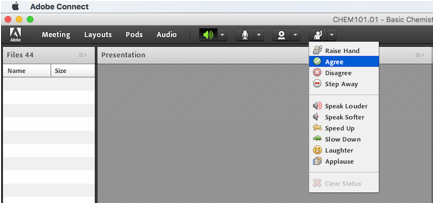

Ask and accept attendee questions
|
1. Using audio or the Q & A pod, a host asks a question. 2. Attendees click the Raise Hand button in the menu bar, and the following occurs: o Everyone sees the raised hands next to names in the Attendees pod. If multiple attendees raised their hand, the people who raised their hand soonest appears higher in the list. · Hosts receive a notification in the upper right of the meeting room with Approve and Decline buttons. Individual notifications show how many raised their hand and the current attendee’s position in the queue. For example, 4/10 indicates that the attendee was the fourth of ten attendees to raise their hand. |
